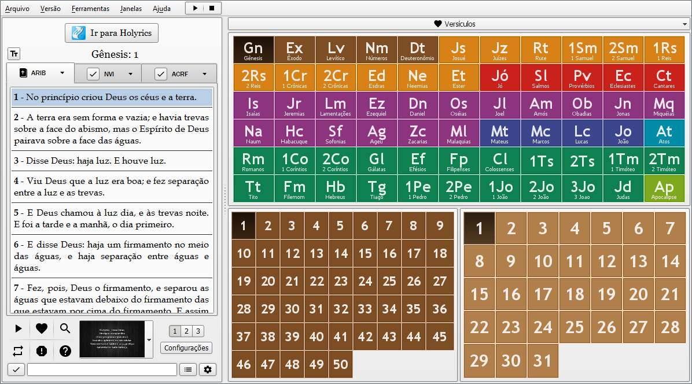
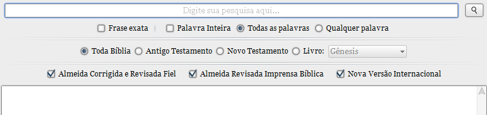

Utilize os mesmos Temas para exibir os versículos da Bíblia.
Principais Funcionalidades
- Versões
- Diversas versões disponíveis para leitura e também para download.
- Rapidez
- Vá até o versículo desejado com apenas 3 cliques;
- Pesquisa rápida a qualquer momento digitando o nome do livro pelo teclado.
- Lista de favoritos
- Guarde versículos na lista de favoritos e acesse-os rapidamente.
- Apresentação Personalizada/Automática
- Crie uma apresentação com versículos específicos.
- Pesquisa
- Pesquise versículos com diversos parâmetros.
- Controle pelo celular
- Apresentação dos versículos no computador pelo celular.
Você pode visualizar a Bília em diferentes versões utilizando as abas de navegação.
Selecionar uma aba não altera a versão utilizada no momento, para tornar a versão da aba padrão, clique no botão "check" da respectiva aba.

